Sapporo: The TV Tower, Tanukikoji and Some of Japan's Best Food
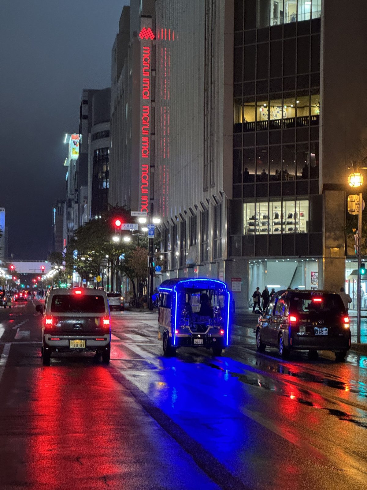
Rainy Sapporo streets full of lights
After four nights in the Biei and Furano countryside, we swapped farmland for city lights and spent three nights in Sapporo, Hokkaido's vibrant capital. The city has a bit of everything, from the glowing Sapporo TV Tower to Tanukikoji, a historic covered arcade loved for over 150 years, where retro charm meets modern style. Its 200 or so stores have everything from fashion and skincare to pre-loved luxury finds, and even rooms packed wall to wall with gachapon (capsule toy machines). Sapporo is busy without ever feeling as hectic as Tokyo, and the easy-to-navigate centre is lovely to explore on foot, just be sure to rug up, as it gets cold!
Then there's the food. The best ramen we had in Japan was here, and one of our favourite dining experiences of the whole trip was at a beautiful yakitori restaurant.
Where we stayed
We stayed at Onsen Ryokan Yuen Sapporo, a modern take on a traditional Japanese inn, right in the city. It was beautiful and so calming. We walked in through a grand entrance like an old ryokan, and inside it was all Hokkaido oak, natural stone, muted colours and soft, warm lighting.
Our room was just as stylish, with a low timber bed on a raised platform, a soft glow underneath, paper screens over the window and a little wooden lamp. They gave us yukata (light cotton robes) to sleep and lounge in, plus tabi socks and sandals, and there was a cute tea set with some little local sweets to try, a lovely way to warm up after a cold day out.
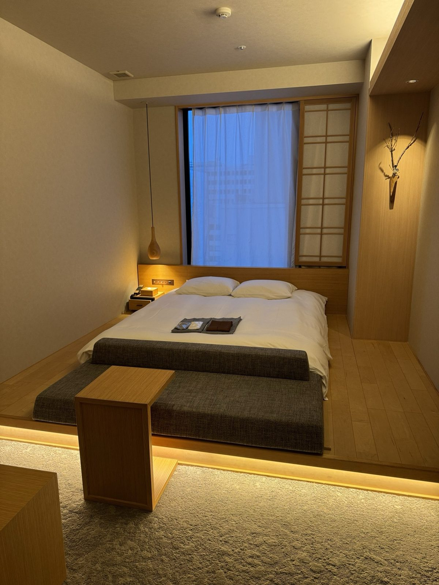
Our room, with its low timber bed and soft lighting
Breakfast was a gorgeous Japanese set: sashimi, salmon roe, grilled fish and tempura, rolled omelette, a silky chawanmushi (savoury egg custard), miso soup and rice. It kept us going all morning. Breakfast isn't included in every booking, so if you'd like it, book it ahead of time.
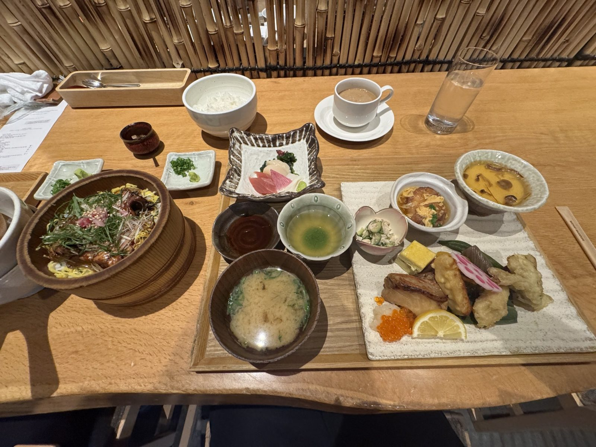
Our Japanese set breakfast
It was the little details that made it special. There were seasonal displays throughout the hotel, in the lobby and by the lifts, so something beautiful greeted us on every floor as we stepped out.
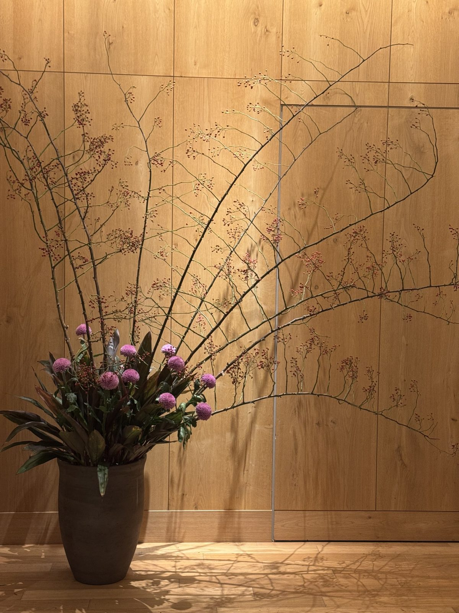
One of the seasonal displays by the lifts
Where we stayed: Onsen Ryokan Yuen Sapporo. Book Yuen Sapporo
Driving into Sapporo? Check the parking before you arrive. Our hotel had limited spaces, so on the first night we used a car park next door, and after that we could park underneath the hotel. At the end of our stay we returned the hire car and flew back to Tokyo.
Shopping and a rainy night in the city
One evening, we went shopping around the city centre, browsing 2nd STREET, a big second-hand chain with a great range of pre-loved luxury and vintage pieces, before wandering through some of the city's big shopping centres and department stores. We also popped into Don Quijote, which was much calmer than the busy branches we'd visited in Tokyo and Osaka. I picked up some Japanese skincare and a few cute novelty items, and checked the KitKat aisle for any seasonal or Hokkaido-only flavours we hadn't seen elsewhere. Our best finds were at Zara, where I picked up some gorgeous baby clothes for my friend Evelyn, who was expecting a little boy, and couldn't resist a cute capybara bag for my niece. I treated myself too, to a pair of brown loafers on a chunky, sneaker-style sole, which were super comfortable and came in handy for all the walking around Tokyo later in our trip.
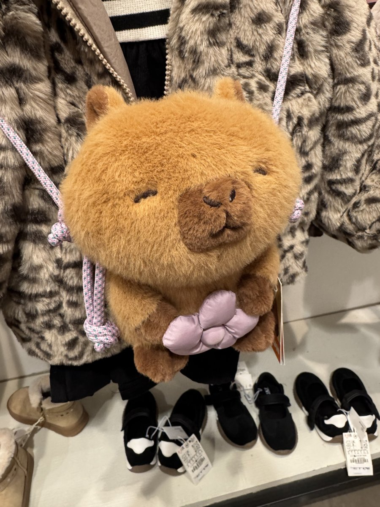
The capybara bag I found for my niece
It rained that evening, and as we wandered back through the city, the wet streets shimmered with the reflections of glowing lights. The photo at the top of this post is one of my favourites from the whole trip.
We finished the night at the Sapporo TV Tower, one of the city's best-known landmarks, standing at the end of Odori Park. Built in 1957, it rises around 147 metres and lights up in different colours at night, with a big digital clock on its face. An observation deck about 90 metres up looks out over the city, and we explored the different levels before browsing the gift shop, where I picked up postcards and stickers for my scrapbook. The little red TV Tower is one of my favourite postcards from this trip.
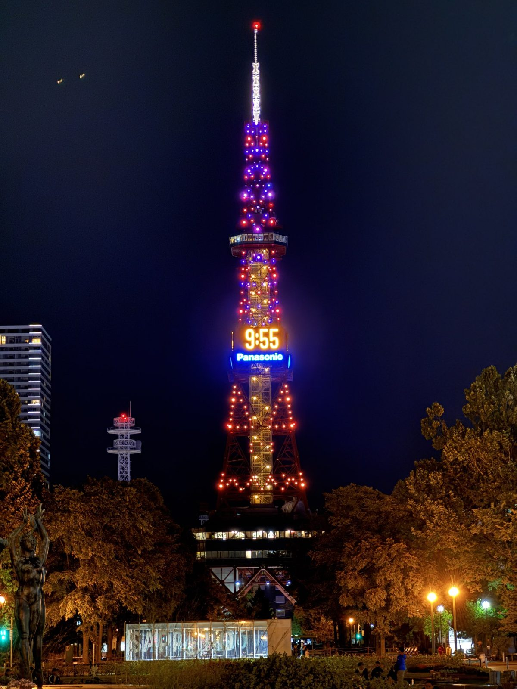
Sapporo TV Tower lit up at night
Stamp collectors, take note: There's a free stamp rally inside the tower, with stamps set up on different levels that build up one picture when you stamp them on top of each other. A couple are up on the observation deck, so keep an eye out so you don't miss any. (Goshuin from shrines and temples are a little different, and I explain them in my Uji post.)
Tanukikoji and gachapon
One of our favourite things to do in Sapporo was simply wander Tanukikoji. If you're keen on a bit of luxury shopping, there are several pre-loved luxury boutiques close together along the strip, and because it's all under one roof, it's easy to browse from shop to shop and stop for food or snacks whenever you like.
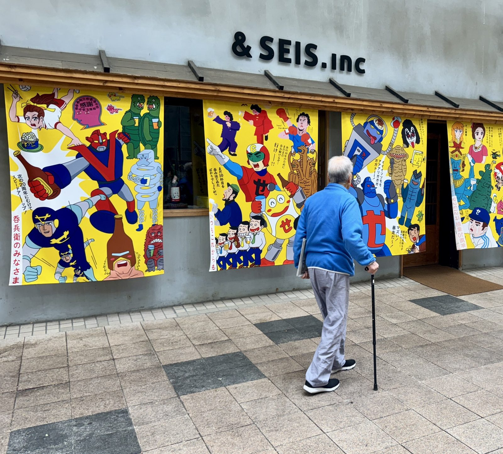
Colourful street art on our walk through Tanukikoji
We spent a lot of time (and ¥100 coins!) in the gachapon rooms, where some of the series are only found in Hokkaido. My favourite was a set of miniature keychains of famous local food and drink, including a tiny snowman-shaped sake bottle and a little Hokkaido melon soft serve. I also found mini Japanese skincare keychains, including the Bioré body wipes from my Top Picks, which made me smile since they were brands I'd actually used on the trip.
Hungry from all that shopping, we wandered into a ramen shop along Tanukikoji without planning to, and it turned out to be the best ramen we had in all of Japan. The real star was the broth, a rich, spicy miso packed with flavour, topped with thick slices of charred pork, bamboo shoots and wood ear mushrooms. I still think about it!
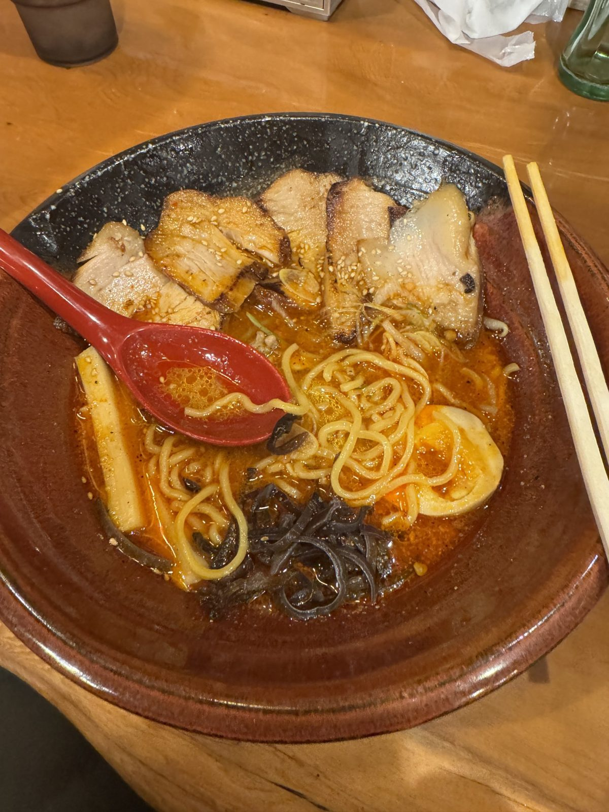
The best ramen we had in all of Japan
Sapporo's food halls
All over Japan, the basement levels of department stores and shopping centres are home to food halls, known as depachika, and they're one of the best parts of shopping here. They're packed with bakeries, dessert counters and beautifully wrapped sweets, perfect for picking up food souvenirs or grabbing a quick bite. In Japan, it's customary to bring back omiyage (souvenir treats) for family, friends and coworkers, and the boxes are so pretty they make lovely gifts.
In Sapporo, our favourite was the food hall in the basement of COCONO SUSUKINO, home to DONGURI, a much-loved Sapporo bakery whose counter was piled high with pastries and breads. Just along from it is Fruitscake Factory, with a glass counter full of beautiful fruit tarts and cakes. With so much to try and only so much room, we picked up a few things to share: pastries from DONGURI, a slice of Fruitscake Factory's tart piled with Shine Muscat grapes and strawberries, their Hokkaido Ebisu pumpkin pudding (one of my favourite pumpkin puddings of the whole trip), and a delicious matcha cookie with chewy mochi inside, which we ate sitting outside in the sunshine.
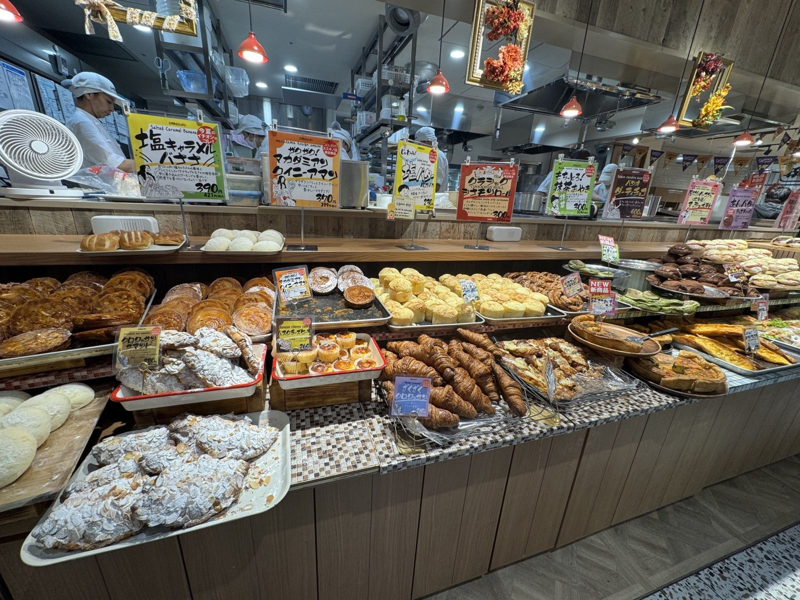
DONGURI bakery, COCONO SUSUKINO
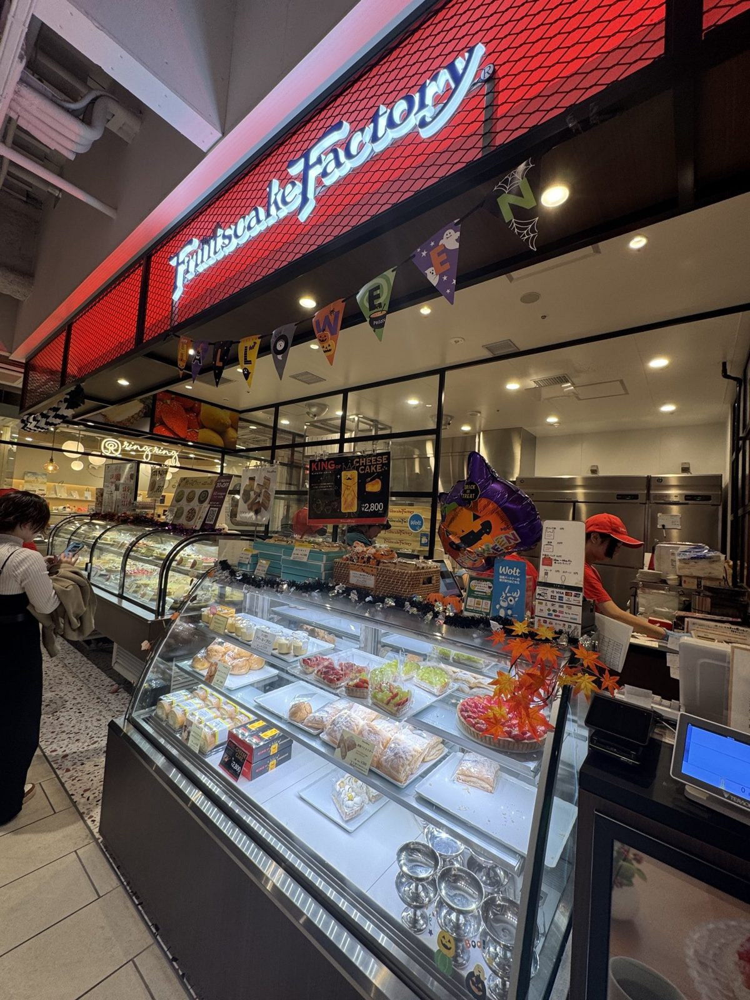
Fruitscake Factory, COCONO SUSUKINO
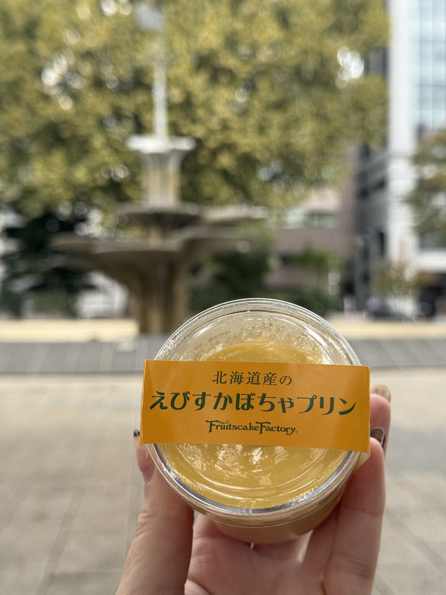
Fruitscake Factory's Ebisu pumpkin pudding
You'll also find Royce', Hokkaido's famous chocolate maker, all over Sapporo. On the recommendation of our friends Chris and Phoebe, who are obsessed with it, we tried their best-known treat, Nama Chocolate in the blue box, soft little squares of chocolate dusted with cocoa. It needs to stay refrigerated, so it's best enjoyed while you're there or picked up at New Chitose Airport, which even has its own Royce' chocolate factory and shop. To bring home, we picked up the Potatochip Chocolate (crinkle-cut chips half dipped in chocolate), a seasonal pumpkin and pistachio chocolate bar, a Hokkaido potato butter pastry, and Senshuan's Norseman pies, a Sapporo classic of flaky pastry filled with sweet bean paste, in seasonal chestnut and pumpkin flavours.
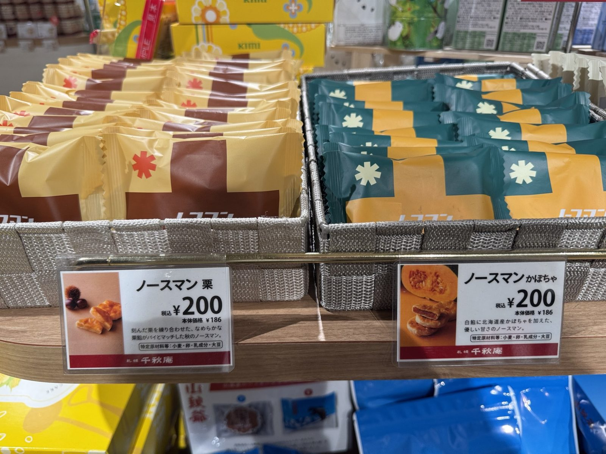
Senshuan's Norseman pies, a Sapporo classic we brought home
More Hokkaido favourites
Yakitori is probably my favourite food in Japan (along with the puddings!), and one of our best meals of the whole trip was at a yakitori restaurant in Sapporo that specialises in chicken and cooks almost every part of it. We tried things we'd never had before, even a dish with a rich egg yolk, and everything was delicious. The restaurant had a calm, minimal fit-out that felt quite high-end, and while it wasn't a cheap night out, it was worth it for the experience. Our chef explained every dish and recommended sakes to pair with the food, and while some staff spoke English, it was nice to try a little Japanese too.
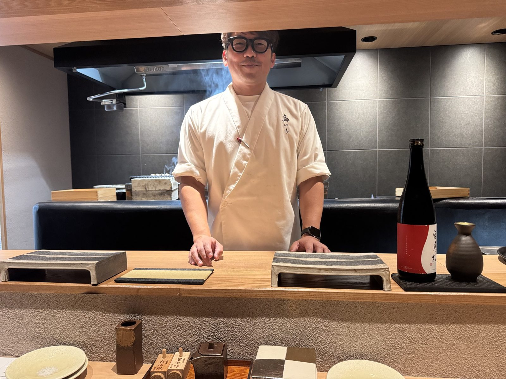
Our friendly yakitori chef
It was completely different from the yakitori we had in Tokyo, which was down a set of stairs, loud and lively, with plenty of drinks and a mix of skewers. This one was quieter and more refined, and all about the chicken. Both were great experiences, just in totally different ways.
Sit at the counter: Ask for a seat at the counter, right by the grill, so you can watch every skewer being cooked, chat with the chefs and get their sake recommendations.
Even the convenience store puddings in Hokkaido were next level. We worked our way through Ohayo's range, from a silky Jersey milk pudding to a crunchy caramelised one and a baked cream cheese version, along with plenty of other konbini (convenience store) treats like Lawson's banana milk daifuku (soft mochi filled with banana cream) and 7-Eleven's chewy white taiyaki filled with custard. There always seemed to be a new seasonal dessert to try, and trying them all was half the fun!
My verdict
Sapporo is a wonderful city to visit, with great shopping and some of the best food we ate anywhere in Japan. Between the incredible ramen and yakitori, wandering Tanukikoji and browsing the food halls, there was always something to enjoy. We'd love to go back, stay at Yuen again, and discover even more of what the city has to offer.
Best for: food lovers, shopping and city nights.
Top tip: head down to the basement food halls, and ask for a seat at the counter for yakitori!